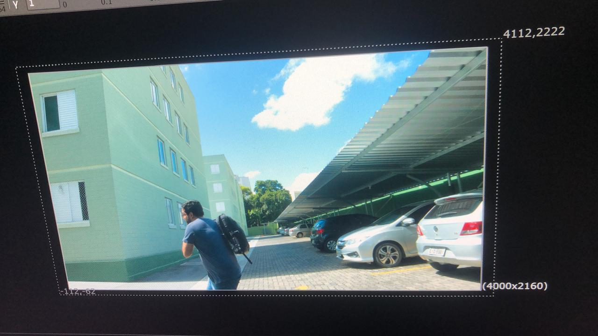
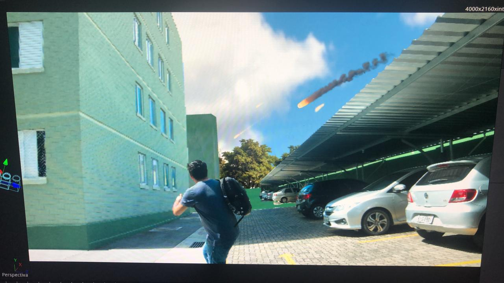
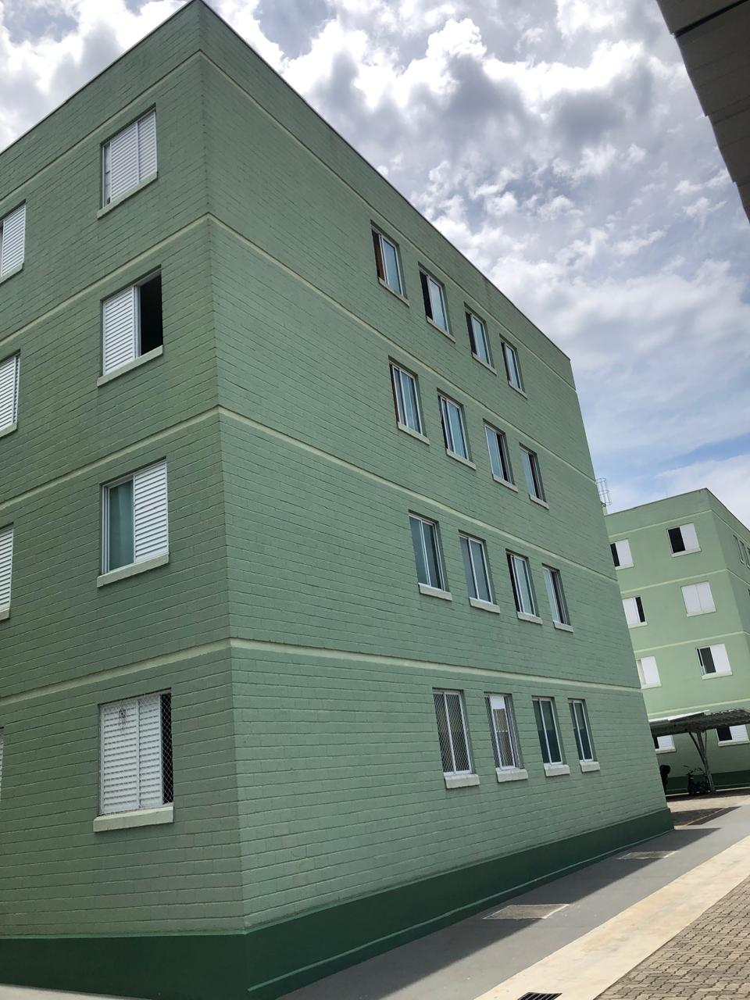
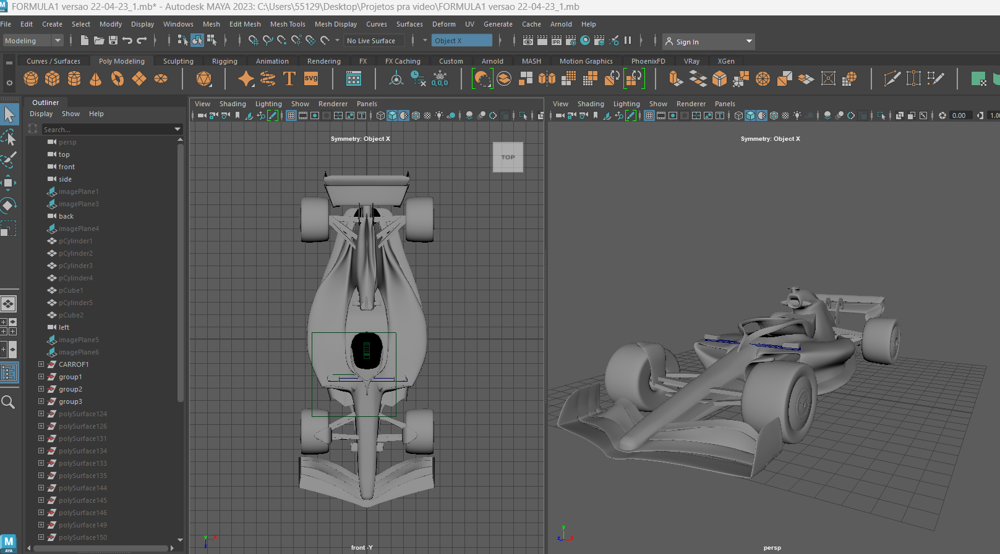
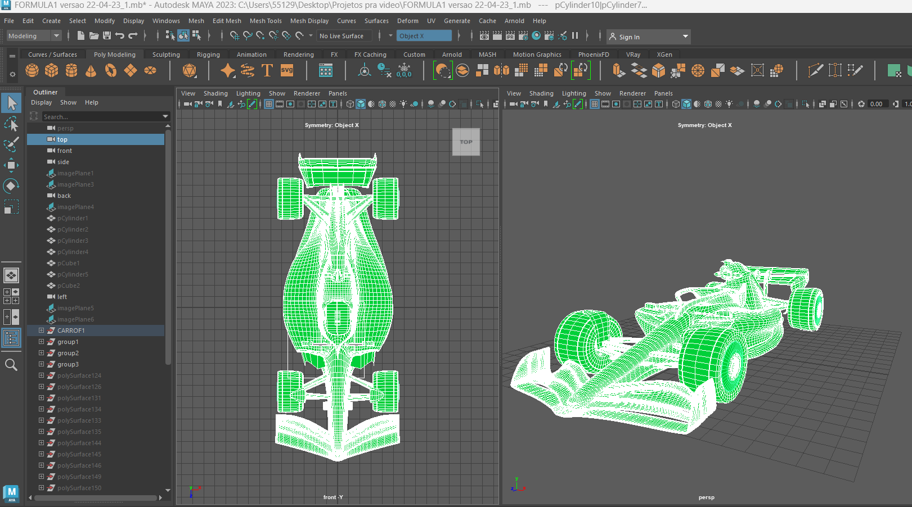
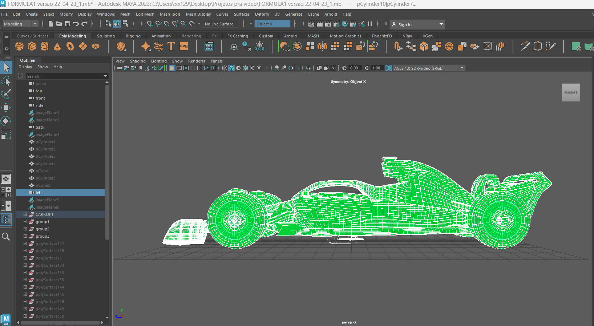
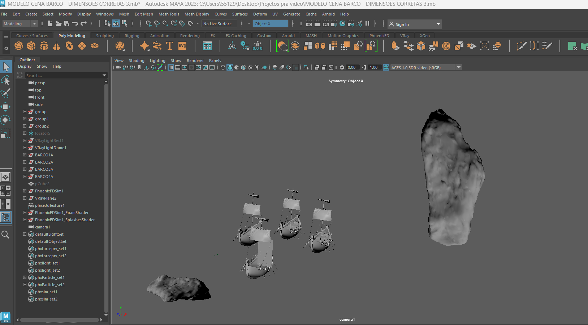
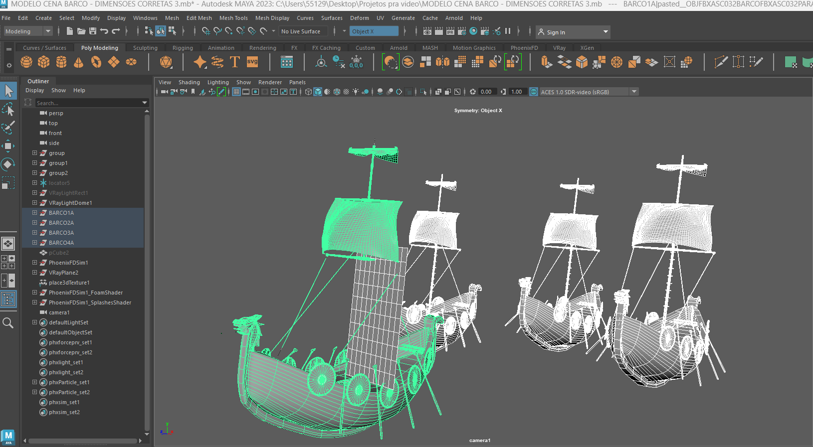
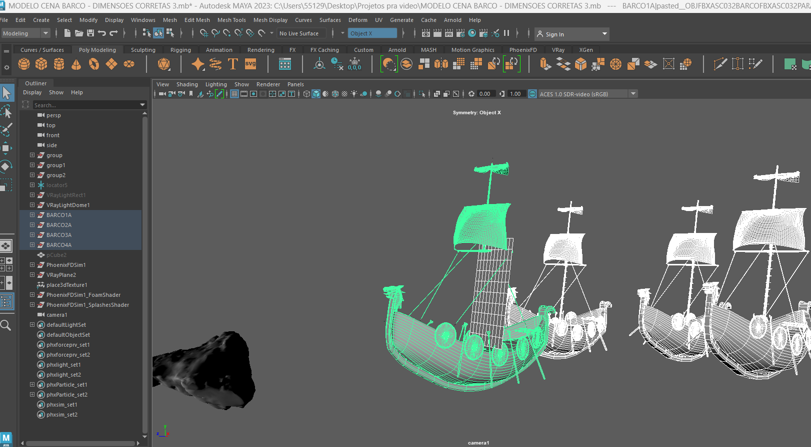

Cenas VFX
Uma estrutura desaba em partículas digitais. Modelado em Maya, simulado em Houdini e finalizado em Nuke e Resolve, o prédio simboliza a derrocada de ideias sob pressão.









Making Of
A criação de Brainstorm envolveu meses de estudo, testes e renderizações. Veja como as cenas foram compostas, do storyboard à render final. Entenda os desafios, como a otimização de simulações, e a rotina de um projeto de pós-produção em VFX.
Prédio (Matchmove + Rebuild)

Reconstrução do prédio em 3D com base na filmagem real, aplicando tracking, modelagem e composição final.
Barco Viking (Full CGI)

Cena 100% virtual com ambiente 3D, simulação de água, atmosfera e composição final no Nuke.
Carro F1 (Inserção 3D em cena real)

Modelagem, renderização e integração de um carro 3D em filmagem real com matching de iluminação e movimento.
Foto da Equipe
Este projeto foi possível graças a um time criativo apaixonado. Liderado por Alex Maciel Ferreira (Direção e VFX), contou com colaborações em animação, composição e design. Apoio técnico e institucional: Faculdade Melies.

Contato
Quer conversar sobre colaborações, festivais, ou o processo criativo por trás de Brainstorm? Fale comigo!
Email: contato@brainstormfilme.com